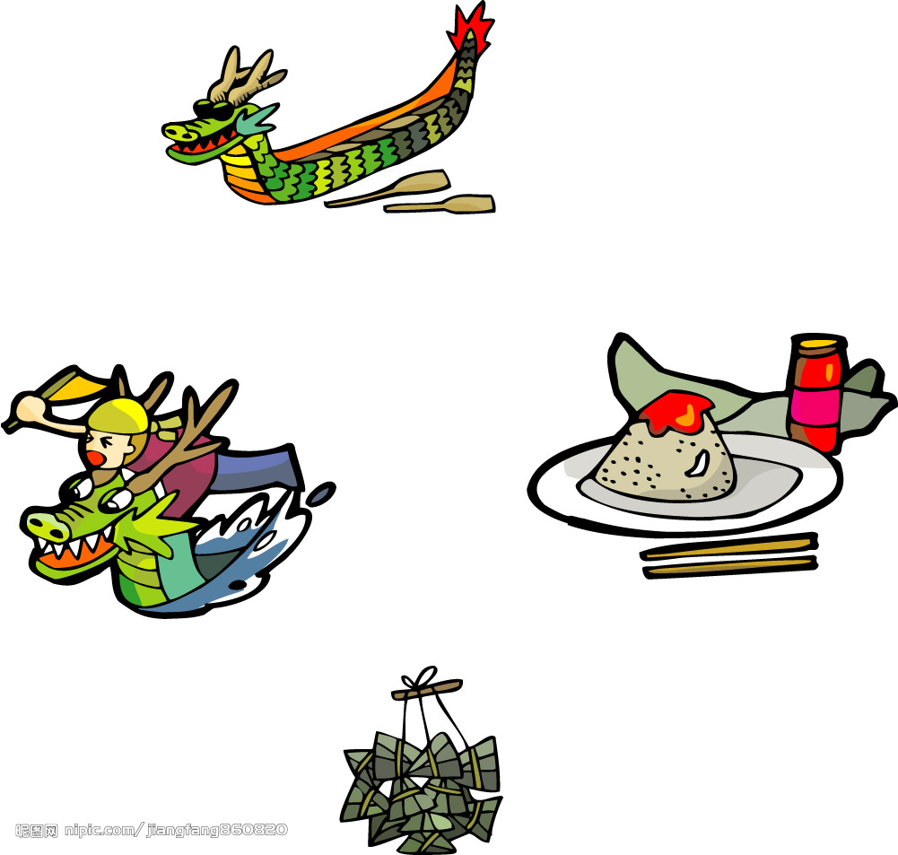
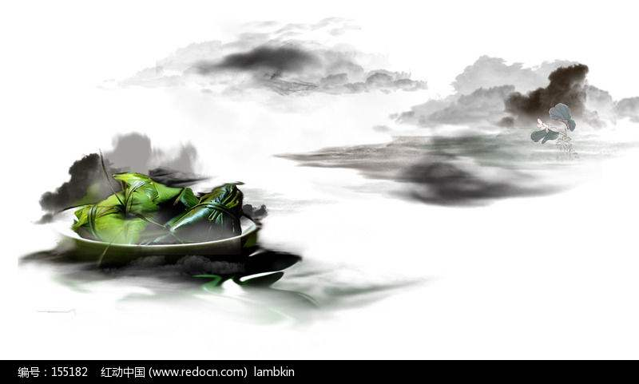
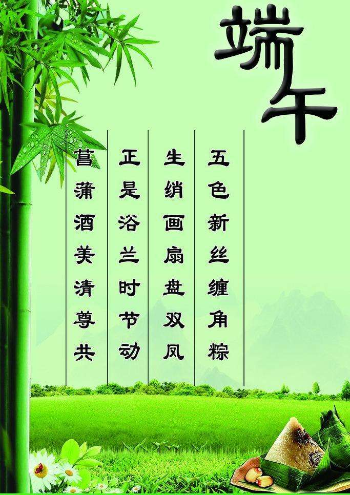

“端午”一词最早出现于西晋名臣周处的《风土记》，这本文献成了现代人们查考端午节等传统节日习俗的重要参考。端午节起源于何时──长期以来众说纷纭，说法不一，争论不休。
"女儿回娘家，挂钟馗像，迎鬼船、躲午，帖午叶符，悬挂菖蒲、艾草，游百病，佩香囊，备牲醴，赛龙舟，放风筝，比武，击球，荡秋千，给小孩洗苦草麦药澡，涂雄黄，饮用雄黄酒、菖蒲酒，吃五毒饼、咸蛋、粽子和时令鲜果等。"
端午节纪念屈原，因此，它也成了人们心中的诗人节。历代诗词中有不少描述端午景象、缅怀古人的诗词佳作。
联合国教科文组织保护非物质文化遗产政府间委员会第四次会议2009年9月30日在阿联酋阿布扎比审议并批准了端午节列入世界非物质文化遗产名录，端午节成为中国首个入选世界非遗的节日。